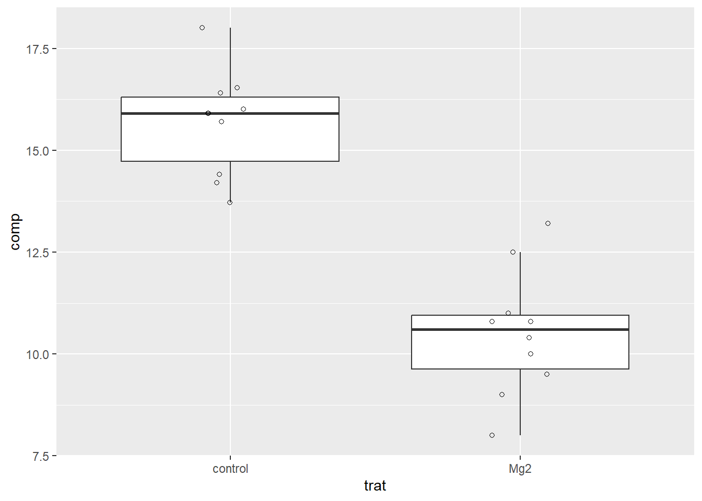
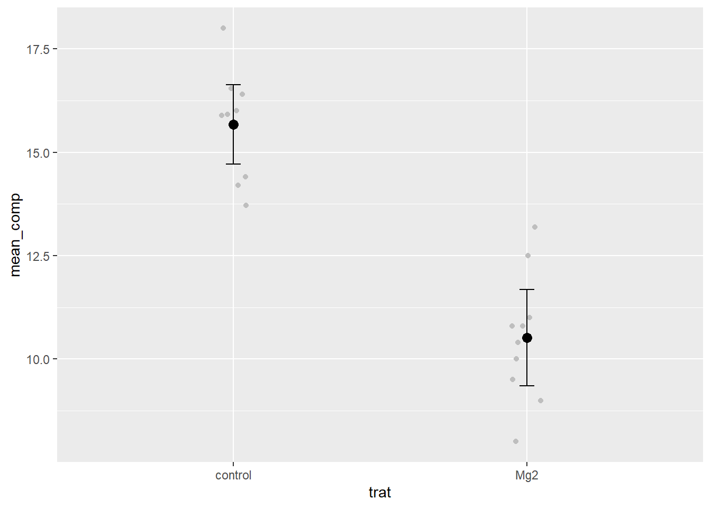
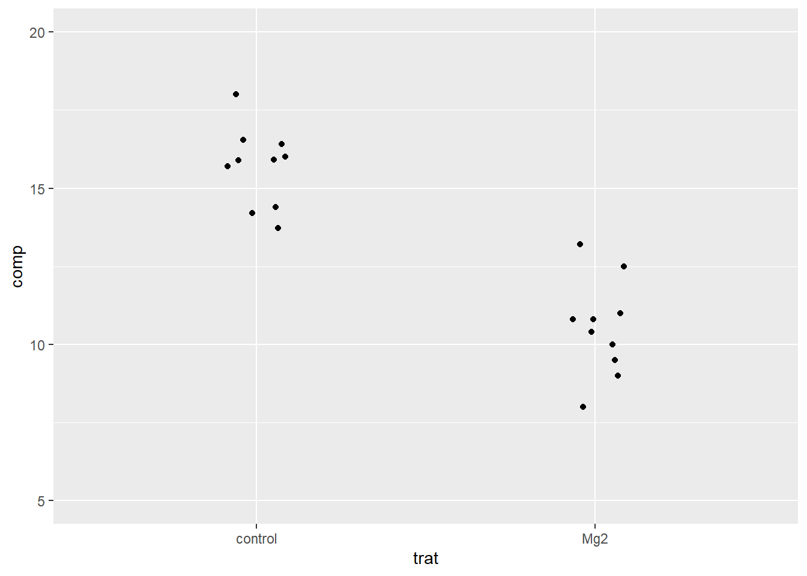
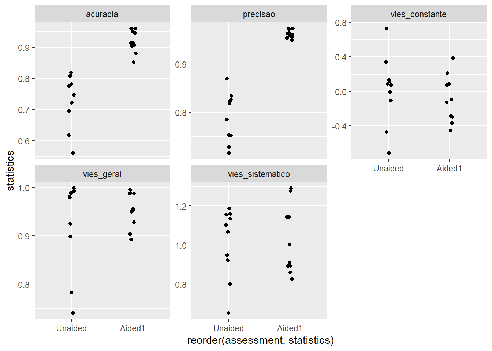
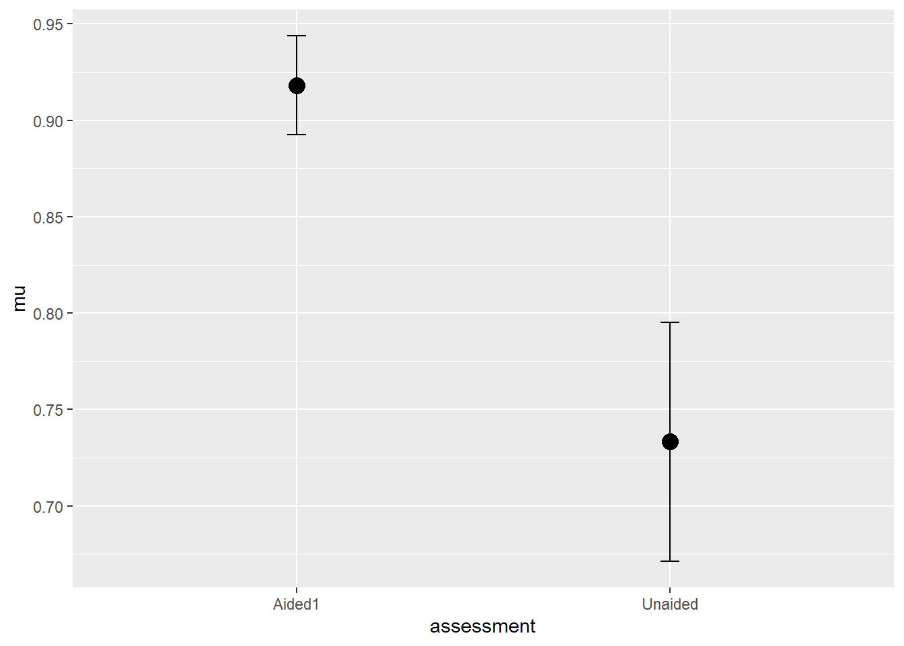

Codigo
library(magrittr) # para usar pipes
library(ggplot2) # para gráficos
library(dplyr)
library(readxl)
library(tidyr)
library (emmeans)En este apartado veremos formas de analizar los datos en experimentos en los que se controlan al máximo las causas de variación de la respuesta y se minimiza el error experimental. Veremos los tipos de análisis según el número y el tipo de variables independientes (niveles de los factores) y también el número de tratamientos o grupos a comparar. Iniciaremos con casos simples en cuanto al número de grupos y avanzaremos a medida que aumentemos la complejidad del experimento, así como algunas posibles variaciones en cuanto al número y tipo de variables de respuesta de interés.
Un investigador realizó un experimento con el objetivo de evaluar el efecto de un micronutriente, el magnesio (Mg), añadido la solución al suelo cultivado con plantas de arroz, sobre la gestión de una enfermedad fúngica. Se realizó un diseño completamente aleatorizado con 10 repeticiones, siendo cada repetición una maceta. Uno de los tratamientos es el llamado control, o testigo, sin el suplemento mineral. El segundo es el que lleva el suplemento de Mg a una dosis de 2 mM. En cada una de las réplicas se obtuvo un valor medio de la longitud de las lesiones en un momento determinado tras la inoculación.
La forma más sencilla es visualizar, en el caso de más de 6 repeticiones, mediante boxplots junto con los datos de cada repetición.

Vamos a obtener estadísticos que describan el conjunto, ya sea la tendencia central o la dispersión de los datos. En este caso, serán la media, la varianza, la desviación típica, el error típico y el intervalo de confianza, este último para la inferencia visual.
# A tibble: 2 × 7
trat mean_comp sd_comp var_comp n se_comp ci
<chr> <dbl> <dbl> <dbl> <int> <dbl> <dbl>
1 Mg2 10.5 1.54 2.39 10 0.515 -1.16
2 control 15.7 1.27 1.61 10 0.424 -0.958Ahora podemos visualizar los datos con las estadísticas calculadas. Abajo, las barras verticales representan el intervalo de confianza del 95%.

El conjunto está en formato largo, por lo que la variable de respuesta de interés sólo está en una columna. Hay varias formas de separar los datos de respuesta para cada tratamiento en dos vectores. Una es utilizar la función spread del paquete tidyr, que coloca las respuestas en dos columnas, una para cada tratamiento. Creemos el conjunto data_mg2.
Utilizando el conjunto original, vamos a visualizar las respuestas (tamaño de la lesión) para cada tratamiento, ya que ggplot2 requiere los datos en formato ancho.

En el caso de dos grupos, la función que puede utilizar es var.test en R. Utilicemos el formato amplio y llamemos a los dos vectores del conjunto. Compruebe el valor P en la salida del análisis.
F test to compare two variances
data: Mg2 and control
F = 1.4781, num df = 9, denom df = 9, p-value = 0.5698
alternative hypothesis: true ratio of variances is not equal to 1
95 percent confidence interval:
0.3671417 5.9508644
sample estimates:
ratio of variances
1.478111 La normalidad puede comprobarse mediante procedimientos visuales y pruebas específicas.
Shapiro-Wilk normality test
data: Mg2
W = 0.97269, p-value = 0.9146
Shapiro-Wilk normality test
data: control
W = 0.93886, p-value = 0.5404Analisis visual de la normalidad
Welch Two Sample t-test
data: Mg2 and control
t = -8.1549, df = 17.354, p-value = 2.423e-07
alternative hypothesis: true difference in means is not equal to 0
95 percent confidence interval:
-6.490393 -3.825607
sample estimates:
mean of x mean of y
10.520 15.678 Si no se cumplieran los supuestos de normalidad, ¿qué prueba podría utilizarse? En este caso de dos grupos hay dos posibilidades, una es utilizar una prueba no paramétrica o una prueba basada en el bootstrapping de los datos, ambas independientes del modelo de distribución.
Utilizando los mismos datos podemos ver que el resultado es idéntico pero con diferentes valores P.
Se realizó un experimento para evaluar el efecto de la utilización de la escala en la exactitud y precisión de las evaluaciones visuales de la gravedad por parte de los evaluadores. La hipótesis que se pretendía comprobar era que las evaluaciones realizadas con ayuda de una escala de diagramas eran más precisas que las realizadas sin dicha ayuda. Se eligieron al azar diez evaluadores, cada uno de los cuales realizó dos evaluaciones. Se obtuvieron cinco variables que constituyen la medida de concordancia de las estimaciones. Dado que las mediciones se repitieron a lo largo del tiempo para cada evaluador, las muestras son de tipo dependiente.
# A tibble: 6 × 7
assessment rater acuracia precisao vies_geral vies_sistematico vies_constante
<chr> <chr> <dbl> <dbl> <dbl> <dbl> <dbl>
1 Unaided A 0.809 0.826 0.979 1.19 0.112
2 Unaided B 0.722 0.728 0.991 0.922 -0.106
3 Unaided C 0.560 0.715 0.783 1.16 0.730
4 Unaided D 0.818 0.819 0.999 0.948 -0.00569
5 Unaided E 0.748 0.753 0.993 1.10 0.0719
6 Unaided F 0.695 0.751 0.925 0.802 0.336 
Vamos a preparar los datos para el análisis. Los vectores fueron creados de cada grupo para cada variable.
F test to compare two variances
data: Aided1 and Unaided
F = 0.17041, num df = 9, denom df = 9, p-value = 0.01461
alternative hypothesis: true ratio of variances is not equal to 1
95 percent confidence interval:
0.04232677 0.68605885
sample estimates:
ratio of variances
0.1704073 [1] 0.4260888[1] 0.1131276Visualiza me dia e intervalo de confianza

Visualiza a cada evaluador
Tenga en cuenta que las muestras están emparejadas: el mismo evaluador en dos momentos, por lo que existe dependencia.
Paired t-test
data: escala3$Aided1 and escala3$Unaided
t = 5.9364, df = 9, p-value = 0.000219
alternative hypothesis: true mean difference is not equal to 0
95 percent confidence interval:
0.1144707 0.2554241
sample estimates:
mean difference
0.1849474 La prueba t de Wilcoxon sustituye a la prueba t de Student para muestras pareadas cuando los datos no cumplen los requisitos de esta última. También fue desarrollada por F. Wilcoxon en 1945 y se basa en los rangos de las diferencias intrapares. La prueba de Wilcoxon (Wilcoxon Matched-Pairs; Wilcoxon signed-ranks test) es un método no paramétrico para comparar dos muestras pareadas. En un primer momento, se calculan los valores numéricos de la diferencia entre cada par, con tres condiciones posibles: aumento (+), disminución (-) o igualdad (=). Una vez calculadas todas las diferencias entre los valores obtenidos para cada par de datos, estas diferencias se ordenan por su valor absoluto (sin tener en cuenta el signo), y a continuación se sustituyen los valores originales por la posición que ocupan en la escala ordenada. La prueba de la hipótesis de igualdad entre los grupos se basa en la suma de los rangos de las diferencias negativas y positivas.